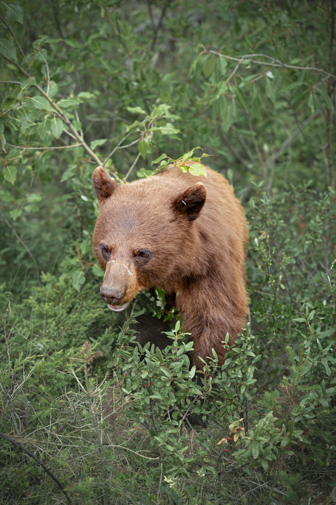
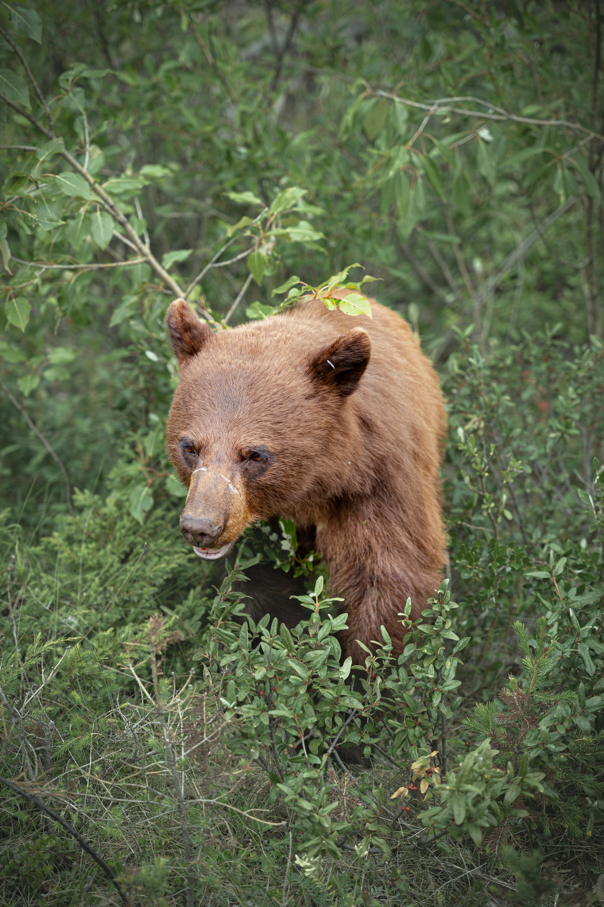

ORSO BRUNO MARSICANO
NOME SCIENTIFICO
Ursus arctos marsicanus
CLASSIFICAZIONE
Mammifero, Ursidi
GRADO DI MINACCIA
Critico(CR)
DOVE VIVE
Marsica, Italia
INTRODUZIONE
L'orso bruno marsicano è un mammifero onnivoro della famiglia degli ursidi, una sottospecie dell'orso bruno presente oggi solo nell'Appennino centrale, con un epicentro distributivo all'interno del territorio del Parco Nazionale d'Abruzzo, Lazio e Molise, con una piccola popolazione che ha subito negli ultimi 2000 - 3000 anni un considerevole restringimento del proprio areale, lasciando presente una popolazione di soli 50-60 individui.
DESCRIZIONE
Presenta corporatura abbastanza tozza e tarchiata, anche se più slanciata rispetto a quella di altre sottospecie di orso bruno di maggiori dimensioni. L'orso presente sulle Alpi italiane appartiene alla sottospecie europea, poiché la sua presenza è riconducibile a un progetto che ha reintrodotto 10 animali provenienti dalla florida popolazione slovena tra il 1999 e il 2002. L'orso bruno marsicano invece, sottospecie autoctona dell'Appennino centrale, ha il mantello di colore bruno marrone, dimensioni più piccole e il cranio più largo e corto del cugino europeo, la testa è grande e tondeggiante, con muso cilindrico e piuttosto schiacciato dotato di un grosso tartufo nerastro.
L'orso è un animale onnivoro, si nutre cioè sia di piante che di animali, anche se la sua dieta è costituita per l'80% da vegetali. La sua alimentazione varia stagionalmente a seconda di ciò che la natura offre: bacche e frutti di bosco, insetti e larve, miele, carcasse di animali.Il peso varia notevolmente nel corso delle stagioni e in funzione del sesso. Infatti, i maschi sono generalmente molto più grandi delle femmine e possono raggiungere un peso che si aggira intorno ai 140 - 210 kg (le femmine sono più piccole) ed una lunghezza massima di 150-180cm.
A maggio inizia per gli orsi il periodo degli amori. Sia i maschi che le femmine possono accoppiarsi con più individui nella stessa stagione e di conseguenza i piccoli di una stessa cucciolata possono essere di padri diversi. A febbraio, durante il periodo di latenza invernale, la femmina partorisce da 1 a 3 cuccioli. Al momento della nascita i piccoli pesano meno di 500 grammi e dipendono completamente dalla mamma. Grazie al latte materno, che è particolarmente ricco di grassi, gli orsacchiotti riescono a crescere rapidamente per affrontare lo svezzamento in estate inoltre i piccoli rimangono con la madre per più di un anno.
 

HABITAT
Il bosco rappresenta l'habitat più importante per l'Orso: in esso trova rifugio, tranquillità e cibo. Non è raro comunque che l'Orso frequenti, a seconda delle stagioni, le praterie di alta quota o i coltivi di fondovalle. Trattandosi di un animale onnivoro, l'Orso riesce ad adattarsi a diversi tipi di habitat, purché tranquilli e sicuri.
In Italia l'orso bruno sopravvive in tre distinte aree geografiche: sulle Alpi del Trentino occidentale (20-25 individui), nelle aree di confine tra Friuli Venezia Giulia e Slovenia (12 individui) e nell'Appennino centrale (30-40). Purtroppo invece la popolazione appenninica dell'orso bruno marsicano è sempre più a rischio di estinzione nonostante le numerose iniziative protezionistiche messe in atto e la vasta rete di aree protette che insistono nel suo areale.
Quindi l'habitat dell'orso bruno marsicano è teoricamente abbastanza variabile: si adatta infatti ad ambienti diversi, anche se legati alle immediate vicinanze di una copertura boschiva, soprattutto faggete e querceti, tipiche delle foreste dell'Appennino centrale.
A causa della presenza umana, tuttavia, questi animali si sono rifugiati in aree via via sempre più impervie e con elevata copertura boschiva. Pare che durante l'estate si spostino verso aree a quota maggiore con copertura prativa e cespugliosa, mentre durante l'inverno prediligono aree rocciose, possibilmente lontane da qualsiasi tipo di attività umana.
MINACCE
In media ogni anno muoiono due orsi in Appennino: un numero terribilmente elevato per una popolazione così piccola, endemica di un territorio che potenzialmente potrebbe ospitare più di 200. Gli orsi bruni marsicani, che vivono nelle aree montuose comprese tra Abruzzo, Lazio e Molise, incontrano ancora oggi molti pericoli: dal 1970 al 2016 sono state rinvenute 118 carcasse di orso in tutta l'area centro appenninica con una media di 2,6 orsi/anno.
Se si analizzano in dettaglio le cause di mortalità note nel periodo compreso tra il 2000 e il 2016, Più del 70% è riconducibile a casi di bracconaggio o a cause accidentali collegate all'uomo.
E' definito una specie poco resiliente, ovvero che difficilmente riesce ad adattarsi ai cambiamenti che interessano il proprio ambiente, è vincolato dalla necessità di potersi alimentare con risorse molto abbondanti e di alta qualità (elevato contenuto nutrizionale ed energetico).
Vive a basse densità e le femmine, che si riproducono poche volte nell'arco della loro vita, non sono quindi in grado di compensare con le nascite gli eccessivi livelli di mortalità a cui la specie è suscettibile. Gli studi condotti, ad oggi, rivelano che ogni anno sono presenti da 1 a 6 femmine con piccoli e che si riproducono in media 3-4 femmine, con una produzione che va da 3 a 11 cuccioli per anno.
Insieme possiamo fare tanto
Ancora oggi la mortalità dovuta ad attività antropiche illegali rimane diffusa e gli sforzi di contrasto a tale minaccia messi in campo nei passati decenni si sono dimostrati sostanzialmente inefficaci. Tale mortalità indotta dall'uomo rappresenta indubbiamente la principale minaccia alla sopravvivenza della specie (considerando anche le ridotte consistenza e variabilità genetica della popolazione). Per dare all'orso bruno marsicano concrete possibilità di sopravvivere in futuro è necessario innanzitutto diminuire drasticamente la mortalità di origine umana e migliorare la connettività ambientale.